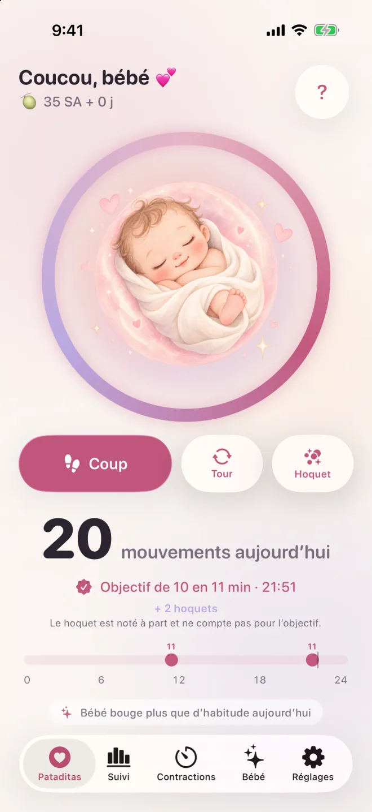

Touche pour noter
Un toucher à chaque mouvement de ton bébé. Rien à démarrer, rien à arrêter.
Touche simplement dès que ton bébé bouge. Pataditas regroupe les mouvements pour toi et te prévient doucement quand tu atteins 10 en 2 heures. Sans minuteur, sans séance, sans compte. Note depuis ton iPhone ou ton Apple Watch.
Télécharger dans l’App StoreCombien de petits coups sont normaux, et quand appeler →
Découvre comment fonctionne Pataditas →
iPhone et Apple Watch · iOS 26 et watchOS 26 ou ultérieur · 11 langues

La plupart des compteurs de petits coups te demandent d’appuyer sur « démarrer », de surveiller l’horloge, puis d’appuyer sur « arrêter ». Mais les bébés ne bougent pas selon un horaire, et tu ne devrais pas avoir à tenir ton téléphone comme un chronomètre.
Dans Pataditas, tu touches simplement quand tu sens un petit coup ou un tour. L’app regroupe tes touchers en un total toute seule et repère quand tu atteins 10 mouvements en moins de 2 heures — puis fête ça avec toi, tout doucement.
Moins de boutons, moins de pression, plus de temps pour savourer ces petits pieds.

Touche Noter un mouvement dès que tu veux enregistrer un petit coup ou un tour. Il n’y a aucune séance à démarrer ni à terminer. Le hoquet peut être noté à part.

Des outils tout doux pour la seconde moitié de ta grossesse, pensés pour ressembler à une grande inspiration.
Un toucher à chaque mouvement de ton bébé. Rien à démarrer, rien à arrêter.
Choisis ce que tu as senti. Le hoquet est enregistré dans ton historique mais ne compte pas dans les 10.
Pataditas repère 10 mouvements en moins de 2 heures et fête ça avec une douce animation.
Vois toute ta journée d’un coup d’œil, avec l’historique de chaque jour précédent.
Compare les mouvements notés aujourd’hui à ceux de tes jours précédents. Des données manquantes peuvent modifier la comparaison ; ce n’est pas une évaluation médicale.
Moment le plus actif de la journée, évolutions et jours de la semaine. Inclus dans Pataditas Plus.
Apporte un résumé clair à ton prochain rendez-vous. Inclus dans Pataditas Plus.
Chronomètre tes contractions et reçois une alerte quand tu atteins la règle 5-1-1.
Suis ta semaine de grossesse (SA) et vois la taille de ton bébé.
Widgets sur l’écran d’accueil et l’écran verrouillé, Centre de contrôle, Siri et bouton Action.
Note les mouvements depuis ton Apple Watch, avec des complications sur ton cadran pour y accéder vite.
Un doux rappel à l’heure que tu choisis, pour prendre un moment au calme avec ton bébé.
Garçon, fille ou surprise : des illustrations personnalisées peintes à l’aquarelle.
Après sept jours de données, vois comment les mouvements notés aujourd’hui se comparent à tes relevés passés. Des données manquantes peuvent modifier la comparaison ; ce n’est pas une évaluation médicale.
Tu te demandes combien de mouvements sont normaux ? Découvre comment le NHS et Count the Kicks abordent le comptage →

Pataditas inclut une app Apple Watch compagnon (watchOS 26 ou ultérieur). Touche ta montre à chaque mouvement que tu sens, et ajoute Pataditas à ton cadran ou à la pile intelligente pour y accéder vite. Les données se synchronisent avec l’app iPhone via ton iCloud privé.
L’app Apple Watch fonctionne avec l’app iPhone, que tu télécharges depuis l’App Store.
Choisis garçon, fille ou surprise, et toute l’app est peinte en harmonie.


Ta grossesse t’appartient.
Ouvre l’app et commence. Nous ne te demandons jamais ton e-mail, ton nom ni ton numéro de téléphone.
Aucune publicité et aucun SDK de suivi. Les statistiques d’usage anonymes sont facultatives.
Tout est stocké sur ton iPhone et dans ton propre iCloud privé (CloudKit). Le développeur ne peut pas y accéder.
Les paiements sont entièrement gérés par Apple. Nous ne voyons jamais tes informations de paiement.
Note les mouvements, consulte ton fil de la journée et reçois ta célébration des 10 en 2 heures sans rien payer. Passe à Plus seulement si tu veux une analyse plus poussée.
Toujours gratuit
Paiement unique · Recommandé
7 jours offerts · résiliation libre
Prix indiqués pour la France, en euros (EUR) ; l’App Store affiche le prix de ton pays. Le Pass grossesse est un paiement unique, sans renouvellement. Plus mensuel se renouvelle automatiquement, sauf si tu résilies au moins 24 heures avant la fin de la période. Résilie à tout moment dans les Réglages de ton iPhone.
Réponses rapides sur ce que disent le NHS et Count the Kicks, et sur Pataditas. Informations générales, pas un avis médical.
Count the Kicks conseille de choisir un moment de la journée où ton bébé est souvent actif, de t’asseoir les pieds surélevés ou de t’allonger sur le côté, et de noter chaque mouvement jusqu’à en atteindre 10. Avec Pataditas, tu touches simplement dès que tu sens un petit coup, un tour ou un glissement ; il n’y a rien à démarrer ni à arrêter, et l’app garde le compte et l’heure pour toi. Le NHS indique qu’il n’est pas nécessaire de compter : demande à ta sage-femme ou à ton médecin quelle approche ils te recommandent.
Il n’existe pas de nombre normal unique. Le NHS indique qu’il n’y a pas de nombre précis de mouvements que tu dois sentir chaque jour ; l’essentiel est de connaître le rythme habituel de ton bébé. Count the Kicks conseille plutôt de chronométrer le temps qu’il faut pour sentir 10 mouvements, à peu près à la même heure chaque jour, à partir de 28 SA. Quoi que tu fasses, contacte immédiatement ta sage-femme, ton médecin ou ta maternité si le rythme change.
La plupart des personnes sentent les premiers mouvements entre 16 et 24 semaines environ (NHS) ; lors d’une première grossesse, cela peut arriver après 20 semaines. Count the Kicks conseille de commencer les comptages quotidiens à 28 SA, ou à 26 SA si ta grossesse est à plus haut risque ou si tu attends plus d’un bébé, tandis que le NHS indique qu’il n’est pas nécessaire de compter. Si tu n’as pas senti de mouvement à 24 semaines, parles-en à ta sage-femme. Demande à ta sage-femme ou à ton médecin ce qu’ils te recommandent.
Les recommandations sur le comptage diffèrent. Count the Kicks (États-Unis) conseille de chronométrer le temps qu’il faut pour sentir 10 mouvements, à partir de 28 SA (26 SA si ta grossesse est à plus haut risque ou si tu attends plus d’un bébé). Le NHS (Royaume-Uni) indique qu’il n’y a pas de nombre précis de mouvements et qu’il n’est pas nécessaire de compter les petits coups, mais que tu dois connaître le rythme habituel de ton bébé. Les deux s’accordent sur l’essentiel : si ton bébé bouge moins que d’habitude, ne bouge plus ou si le rythme change, contacte immédiatement ta sage-femme, ton médecin ou ta maternité. Le NHS ajoute que tu dois appeler même au milieu de la nuit, sans attendre le lendemain. Pataditas note uniquement ce que tu ressens ; demande à ton équipe médicale quelle approche elle te recommande.
Non. Count the Kicks ne compte pas le hoquet, car il le décrit comme involontaire. Dans Pataditas, tu peux noter le hoquet comme un type à part : il est enregistré dans ton historique mais ne compte pas dans les 10 mouvements. Si tu hésites entre un hoquet et un mouvement, demande à ta sage-femme ou à ton médecin.
Pataditas regroupe 10 petits coups ou tours notés en moins de deux heures. C’est le regroupement propre à l’app : ce n’est ni une évaluation de santé ni un objectif quotidien universel. Suis les recommandations de ton équipe médicale.
Contacte immédiatement ta sage-femme, ton médecin ou ta maternité si les mouvements ralentissent, s’arrêtent ou changent. N’attends pas d’atteindre un objectif de comptage ni le lendemain. Le NHS indique d’appeler tout de suite, même au milieu de la nuit, et de ne pas se fier à un appareil d’écoute du cœur à domicile. NHS.
Après sept jours de données, Pataditas montre comment les mouvements que tu as notés aujourd’hui se comparent à tes jours précédents. Des données manquantes peuvent modifier la comparaison. L’app ne peut pas mesurer tous les mouvements ni savoir si ton bébé va bien, et ce n’est pas une évaluation médicale.
Oui. Il n’y a ni compte, ni publicité, ni suivi, et les statistiques d’usage anonymes sont facultatives et désactivées tant que tu ne les actives pas. Tes données restent sur ton iPhone et dans ton propre iCloud privé (CloudKit). Le développeur ne peut pas les voir. Lis la politique de confidentialité complète.
Oui, tu peux noter les mouvements sans connexion. Si iCloud est activé, tes données se synchronisent de façon privée entre tes appareils via ton propre compte iCloud, et tes réglages (comme ton prénom et ta date prévue) se synchronisent via le stockage clé-valeur d’iCloud. Nous ne voyons ni l’un ni l’autre.
Compter est gratuit pour toujours. Pataditas Plus ajoute l’analyse des tendances avec des graphiques et un bilan PDF pour ton médecin. Choisis le Pass grossesse, un paiement unique de 8,99 € qui couvre toute ta grossesse, sans renouvellement et à partager en famille, ou Plus mensuel à 3,99 € par mois avec 7 jours d’essai gratuit. Tu peux résilier l’abonnement à tout moment dans les Réglages de ton iPhone.
Oui. Pataditas propose une app Apple Watch compagnon (watchOS 26 ou ultérieur) : touche ta montre à chaque mouvement que tu sens, et ajoute Pataditas à ton cadran ou à la pile intelligente. Les données se synchronisent avec l’app iPhone via ton iCloud privé. Elle fonctionne avec l’app iPhone, que tu télécharges depuis l’App Store.
Pataditas fonctionne sur iPhone avec iOS 26 ou ultérieur et sur Apple Watch avec watchOS 26 ou ultérieur. Il est disponible en 11 langues : anglais, espagnol, portugais brésilien, allemand, français, italien, japonais, coréen, chinois simplifié, néerlandais et albanais.
Un compteur de mouvements du bébé tout en douceur. Touche simplement quand ton bébé bouge.
Télécharger dans l’App Store
Informations produit par Kaelux · Mis à jour le 21 octobre 2026. Les affirmations médicales de cette page proviennent des sources ci-dessous (en anglais) et ont été vérifiées pour la dernière fois le 21 octobre 2026. Ce sont des informations générales, pas un avis médical, et elles n’ont pas été relues par un professionnel de santé.